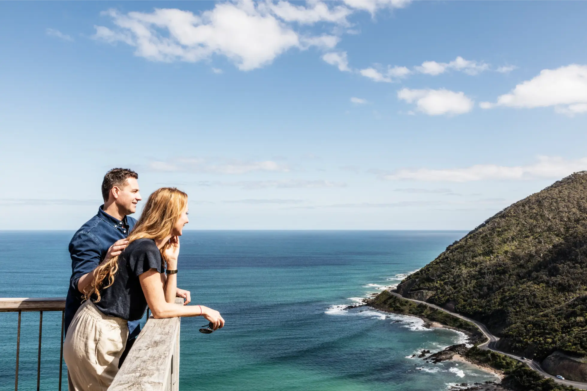

Short answers
Great Ocean Road Tour FAQs
Planning a Great Ocean Road tour from Melbourne? These answers cover timing, private tours, public tours, self-driving, custom itineraries, families, and the most popular stops.
For detailed planning, follow the links to the deeper guides.
Planning Your Great Ocean Road Day Trip
Yes. You can do the Great Ocean Road in one day from Melbourne, but it is a long day and should be planned carefully. Read the one-day Great Ocean Road itinerary.
A full-day tour from Melbourne is usually planned around a long touring day, often up to 12 hours depending on route, season, stops, traffic, and pick-up location.
An early start is usually best if you want to include the main coastal highlights and the Twelve Apostles region in one day.
One day is enough for the major highlights, but not enough to see everything slowly.
Private Great Ocean Road Tour Questions
Private transport, driver-guide service, door-to-door pick-up and return, bottled water, tolls, and fuel are included. Meals, attraction fees, or optional extras should be confirmed during enquiry.
Yes. A private tour can be customised around your group, interests, timing, and preferred pace, as long as the final plan remains realistic. See the custom Great Ocean Road itinerary page.
Private tours usually include pick-up from your Melbourne accommodation or an agreed location.
The Great Ocean Road Tour is operated by Australian Journeys, a Melbourne-based private tour company.
Private Tour, Public Tour and Self-Drive Questions
A private tour is better if you value comfort, flexibility, door-to-door service, and travelling only with your own group. A public tour may be better if your main priority is price.
A public tour may be enough if you are travelling solo, want a lower-cost option, and are happy with a fixed timetable.
Self-driving can be a good option for confident drivers who enjoy long road trips. For a one-day trip from Melbourne, it can also be tiring. Compare the options on the private tour vs public tour guide.
Stops, Attractions and Itinerary Questions
Yes, the Twelve Apostles are usually a key highlight of a private Great Ocean Road tour.
Yes, Loch Ard Gorge is commonly included where timing and conditions allow.
Koalas may be seen in known wildlife areas such as around Kennett River, but sightings are never guaranteed.
For most first-time visitors, the strongest stops include the Twelve Apostles, Loch Ard Gorge, Gibson Steps, Memorial Arch, selected coastal lookouts, and possibly rainforest or wildlife areas. Read the best stops on the Great Ocean Road guide.
Still Planning Your Great Ocean Road Tour?
If you are not sure which tour option suits your group, send an enquiry with your date, group size, and what you want from the day. Australian Journeys can help you understand what is realistic and suggest the best private tour option.